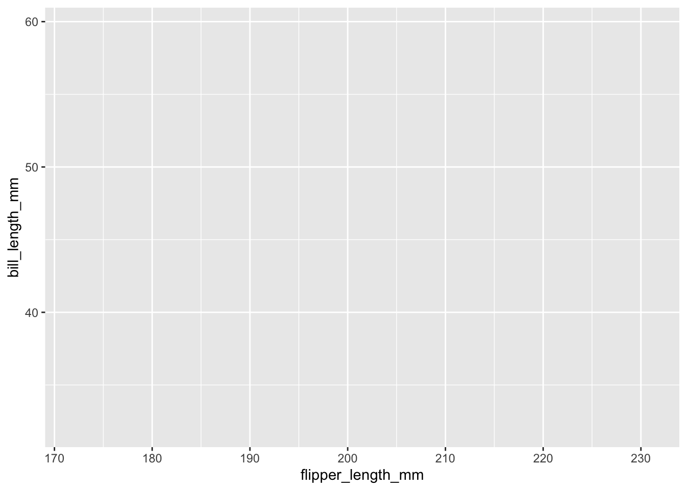
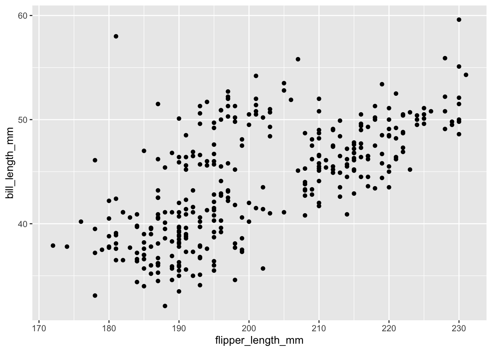
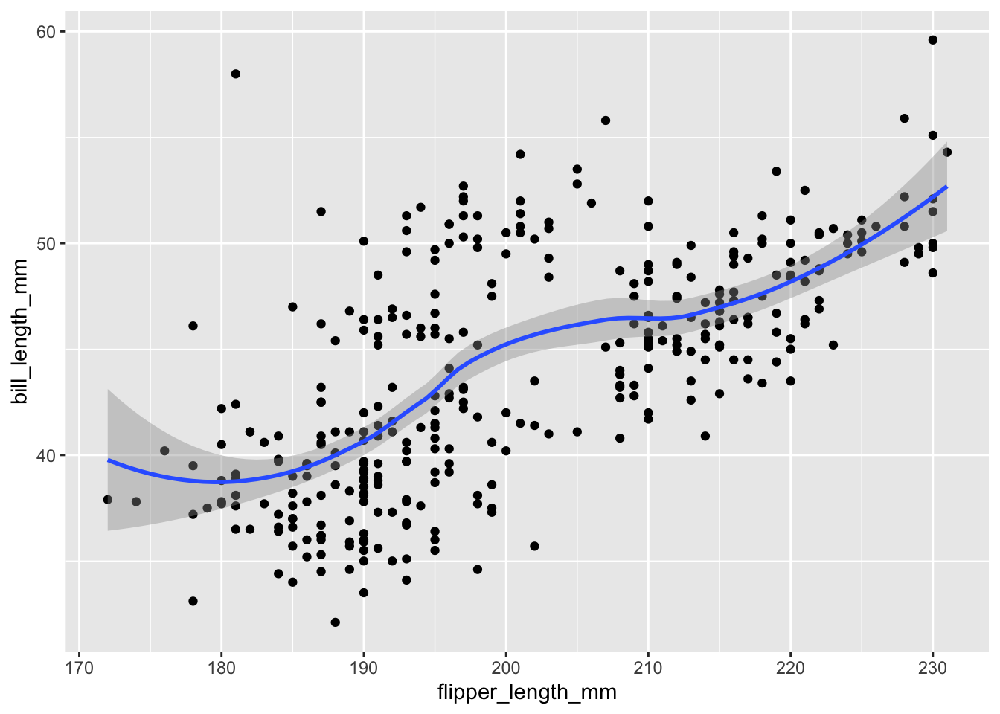
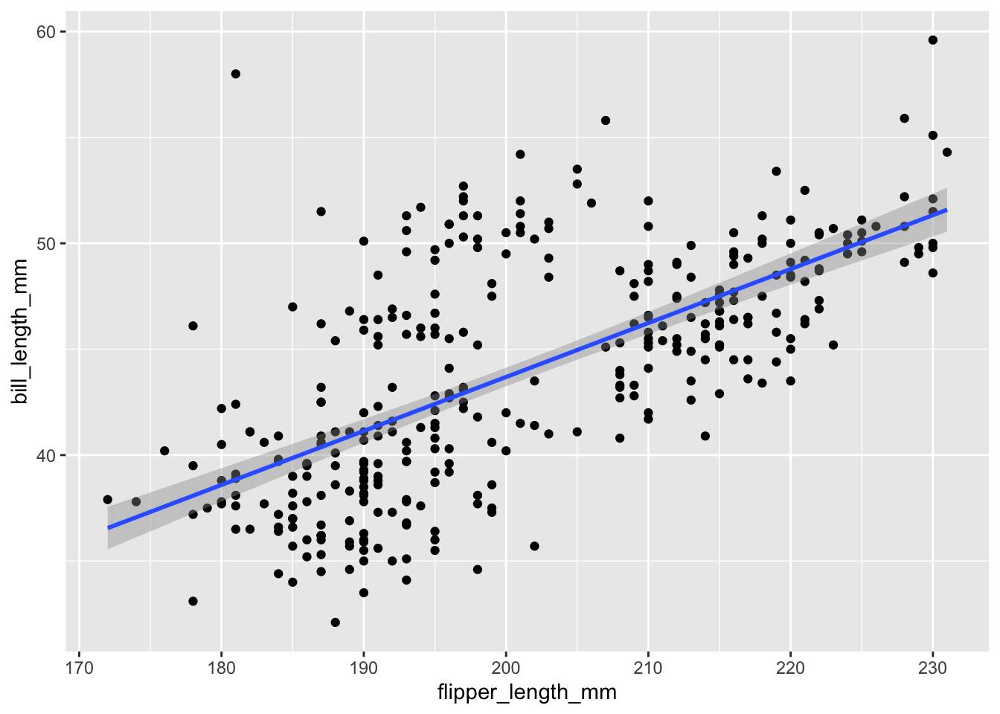
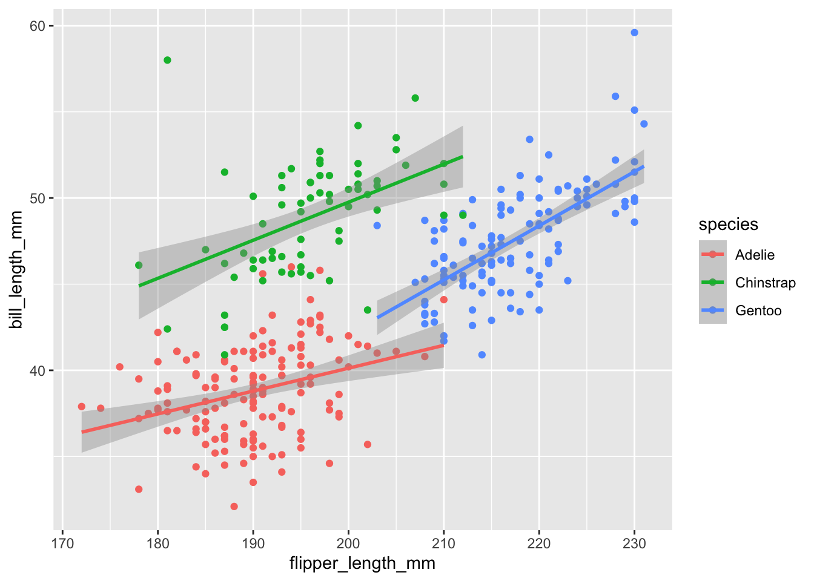
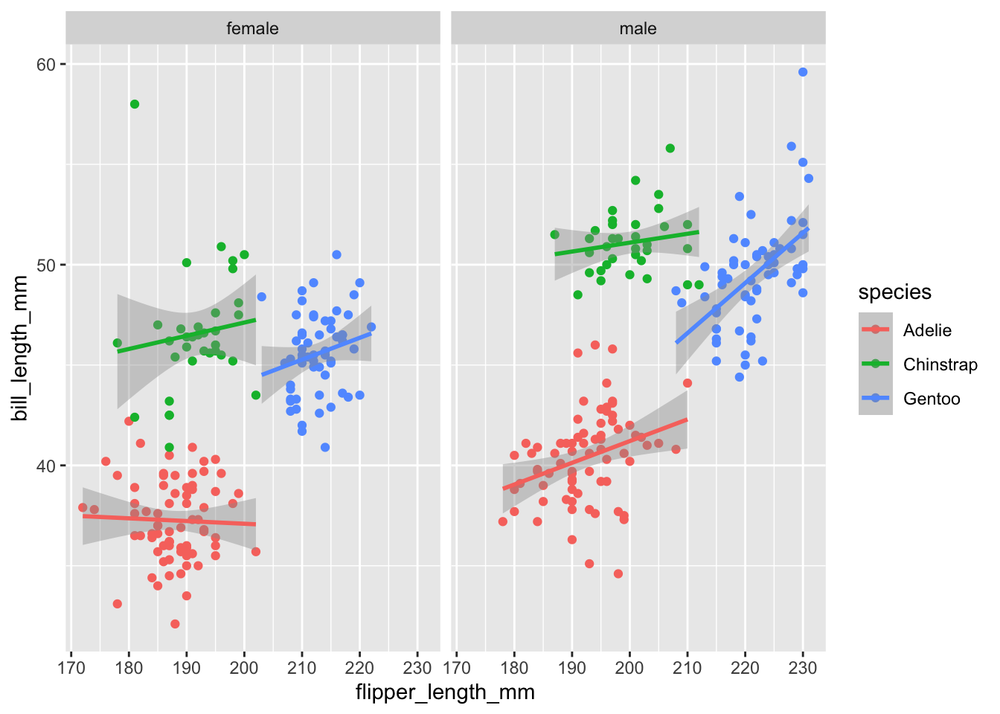
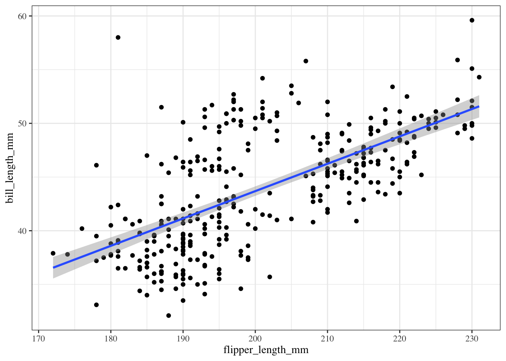
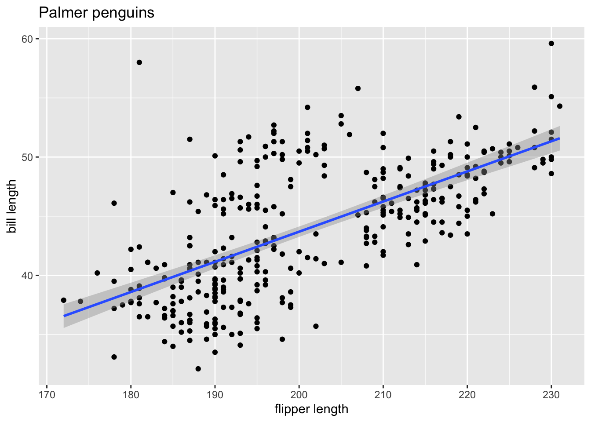

library(tidyverse)3 Tidyverse and data viz
“Happy families are all alike; every unhappy family is unhappy in its own way.” —- Leo Tolstoy
“Tidy datasets are all alike, but every messy dataset is messy in its own way.” —- Hadley Wickham
3.1 Learning objectives
- Know difference between relative vs absolute paths
- Use modern R packages (
readr) for reading and writing data in R - Understand the advantages of a
tibbleanddata.framedata objects in R - Learn about the
dplyrR package to manage data frames - Recognize the key verbs to manage data frames in
dplyr - Use the “pipe” operator to combine verbs together
- Be able to build up layers of graphics using
ggplot()
3.2 Reading and writing data
Here, we introduce ays to read and write data (e.g. .txt and .csv files) using base R functions as well as more modern R packages, such as readr, which is typically 10x faster than base R.
3.2.1 Relative paths
When you open up a .Rproj file, RStudio changes the path (location on your computer) to the .Rproj location.
After opening up a .Rproj file, you can test this by
getwd()When you open up someone else’s R code or analysis, you might also see the
setwd()function being used which explicitly tells R to change the absolute path or absolute location of which directory to move into.
For example, say I want to clone a GitHub repo from Roger, which has 100 R script files, and in every one of those files at the top is:
setwd("C:\Users\Roger\path\only\that\Roger\has")The problem is, if I want to use his code, I will need to go and hand-edit every single one of those paths (C:\Users\Roger\path\only\that\Roger\has) to the path that I want to use on my computer or wherever I saved the folder on my computer (e.g. /Users/Stephanie/Documents/path/only/I/have).
- This is an unsustainable practice.
- I can go in and manually edit the path, but this assumes I know how to set a working directory. Not everyone does.
So instead of absolute paths:
setwd("/Users/jtleek/data")
setwd("~/Desktop/files/data")
setwd("C:\\Users\\Michelle\\Downloads")A better idea is to use relative paths with the here R package.
- It will recognize the top-level directory of a Git repo and supports building all paths relative to that.
- For more on project-oriented workflow suggestions, read this post from Jenny Bryan.
3.2.2 The here package
Let’s try using the here package.
library(here)here() starts at /Users/stephaniehicks/Documents/github/teaching/cshlcg2023here::here()[1] "/Users/stephaniehicks/Documents/github/teaching/cshlcg2023"This function creates a path unique to my computer, but will also be unique to yours.
list.files(here::here()) [1] "_book" "_freeze"
[3] "_quarto.yml" "cover.png"
[5] "cshlcg2023.Rproj" "data"
[7] "exercises-01.html" "exercises-01.qmd"
[9] "exercises-02.html" "exercises-02.qmd"
[11] "exercises-03.qmd" "exercises-04.qmd"
[13] "figures" "index.html"
[15] "index.qmd" "intro-to-bioc.qmd"
[17] "intro-to-r.html" "intro-to-r.qmd"
[19] "intro-to-single-cell.qmd" "references.bib"
[21] "references.qmd" "reproducible-res_files"
[23] "reproducible-res.html" "reproducible-res.qmd"
[25] "site_libs" "tidyverse_files"
[27] "tidyverse.qmd" "tidyverse.rmarkdown" list.files(here("data"))[1] "asthma.rda" "chicago.rds" "spotify_songs.RDS"
[4] "team_standings.csv"list.files(here("data", "team_standings.csv"))character(0)Now we see that using the here::here() function is a relative path (relative to the .Rproj file in our cshlcg2022 folder.
Next, let’s use the here package to read in some data with the readr package.
3.2.3 The readr package
The readr package is recently developed by posit (formerly RStudio) to deal with reading in large flat files quickly. The package provides replacements for functions like read.table() and read.csv(). The analogous functions in readr are read_table() and read_csv().
These functions are often much faster than their base R analogues and provide a few other nice features such as progress meters.
For example, the package includes a variety of functions in the read_*() family that allow you to read in data from different formats of flat files. The following table gives a guide to several functions in the read_*() family.
readr function |
Use |
|---|---|
read_csv() |
Reads comma-separated file |
read_csv2() |
Reads semicolon-separated file |
read_tsv() |
Reads tab-separated file |
read_delim() |
General function for reading delimited files |
read_fwf() |
Reads fixed width files |
read_log() |
Reads log files |
A typical call to read_csv() will look as follows.
library(readr)
teams <- read_csv(here("data", "team_standings.csv"))Rows: 32 Columns: 2
── Column specification ────────────────────────────────────────────────────────
Delimiter: ","
chr (1): Team
dbl (1): Standing
ℹ Use `spec()` to retrieve the full column specification for this data.
ℹ Specify the column types or set `show_col_types = FALSE` to quiet this message.teams# A tibble: 32 × 2
Standing Team
<dbl> <chr>
1 1 Spain
2 2 Netherlands
3 3 Germany
4 4 Uruguay
5 5 Argentina
6 6 Brazil
7 7 Ghana
8 8 Paraguay
9 9 Japan
10 10 Chile
# ℹ 22 more rows3.3 Data frames and tibbles
The data frame (or data.frame) is a key data structure in statistics and in R.
The basic structure of a data frame is that there is one observation per row and each column represents a variable, a measure, feature, or characteristic of that observation.
Given the importance of managing data frames, it is important that we have good tools for dealing with them.
For example, operations like filtering rows, re-ordering rows, and selecting columns, can often be tedious operations in R whose syntax is not very intuitive. The dplyr package in the tidyverse is designed to mitigate a lot of these problems and to provide a highly optimized set of routines specifically for dealing with data frames.
3.3.1 Tibbles
Another type of data structure that we need to discuss is called the tibble! It’s best to think of tibbles as an updated and stylish version of the data.frame.
Tibbles are what tidyverse packages work with most seamlessly. Now, that does not mean tidyverse packages require tibbles.
In fact, they still work with data.frames, but the more you work with tidyverse and tidyverse-adjacent packages, the more you will see the advantages of using tibbles.
Before we go any further, tibbles are data frames, but they have some new bells and whistles to make your life easier.
3.3.2 How tibbles differ from data.frame
There are a number of differences between tibbles and data.frames.
Note
To see a full vignette about tibbles and how they differ from data.frame, you will want to execute vignette("tibble") and read through that vignette.
We will summarize some of the most important points here:
- Input type remains unchanged -
data.frameis notorious for treating strings as factors; this will not happen with tibbles - Variable names remain unchanged - In base R, creating
data.frameswill remove spaces from names, converting them to periods or add “x” before numeric column names. Creating tibbles will not change variable (column) names. - There are no
row.names()for a tibble - Tidy data requires that variables be stored in a consistent way, removing the need for row names. - Tibbles print first ten rows and columns that fit on one screen - Printing a tibble to screen will never print the entire huge data frame out. By default, it just shows what fits to your screen.
3.3.3 as_tibble()
Since many packages use the historical data.frame from base R, you will often find yourself in the situation that you have a data.frame and want to convert that data.frame to a tibble.
To do so, the as_tibble() function is exactly what you are looking for.
For the example, here we use a dataset (chicago.rds) containing air pollution and temperature data for the city of Chicago in the U.S.
The dataset is available in the /data repository. You can load the data into R using the readRDS() function.
library(here)
chicago <- readRDS(here("data", "chicago.rds"))You can see some basic characteristics of the dataset with the dim() and str() functions.
dim(chicago)[1] 6940 8str(chicago)'data.frame': 6940 obs. of 8 variables:
$ city : chr "chic" "chic" "chic" "chic" ...
$ tmpd : num 31.5 33 33 29 32 40 34.5 29 26.5 32.5 ...
$ dptp : num 31.5 29.9 27.4 28.6 28.9 ...
$ date : Date, format: "1987-01-01" "1987-01-02" ...
$ pm25tmean2: num NA NA NA NA NA NA NA NA NA NA ...
$ pm10tmean2: num 34 NA 34.2 47 NA ...
$ o3tmean2 : num 4.25 3.3 3.33 4.38 4.75 ...
$ no2tmean2 : num 20 23.2 23.8 30.4 30.3 ...We see this data structure is a data.frame with 6940 observations and 8 variables.
To convert this data.frame to a tibble you would use the following:
str(as_tibble(chicago))tibble [6,940 × 8] (S3: tbl_df/tbl/data.frame)
$ city : chr [1:6940] "chic" "chic" "chic" "chic" ...
$ tmpd : num [1:6940] 31.5 33 33 29 32 40 34.5 29 26.5 32.5 ...
$ dptp : num [1:6940] 31.5 29.9 27.4 28.6 28.9 ...
$ date : Date[1:6940], format: "1987-01-01" "1987-01-02" ...
$ pm25tmean2: num [1:6940] NA NA NA NA NA NA NA NA NA NA ...
$ pm10tmean2: num [1:6940] 34 NA 34.2 47 NA ...
$ o3tmean2 : num [1:6940] 4.25 3.3 3.33 4.38 4.75 ...
$ no2tmean2 : num [1:6940] 20 23.2 23.8 30.4 30.3 ...3.4 The dplyr package
The dplyr package was developed by Posit (formely RStudio) and is an optimized and distilled version of the older plyr package for data manipulation or wrangling.
The dplyr package does not provide any “new” functionality to R per se, in the sense that everything dplyr does could already be done with base R, but it greatly simplifies existing functionality in R.
One important contribution of the dplyr package is that it provides a “grammar” (in particular, verbs) for data manipulation and for operating on data frames.
With this grammar, you can sensibly communicate what it is that you are doing to a data frame that other people can understand (assuming they also know the grammar). This is useful because it provides an abstraction for data manipulation that previously did not exist.
Another useful contribution is that the dplyr functions are very fast, as many key operations are coded in C++.
3.4.1 dplyr grammar
Some of the key “verbs” provided by the dplyr package are
select(): return a subset of the columns of a data frame, using a flexible notationfilter(): extract a subset of rows from a data frame based on logical conditionsarrange(): reorder rows of a data framerename(): rename variables in a data framemutate(): add new variables/columns or transform existing variablessummarise()/summarize(): generate summary statistics of different variables in the data frame, possibly within strata%>%: the “pipe” operator is used to connect multiple verb actions together into a pipeline
Note
The dplyr package as a number of its own data types that it takes advantage of.
For example, there is a handy print() method that prevents you from printing a lot of data to the console. Most of the time, these additional data types are transparent to the user and do not need to be worried about.
3.4.2 dplyr installation
The dplyr package is installed when you install and load the tidyverse meta-package.
library(tidyverse)You may get some warnings when the package is loaded because there are functions in the dplyr package that have the same name as functions in other packages. For now you can ignore the warnings.
3.5 dplyr functions
All of the functions that we will discuss here will have a few common characteristics. In particular,
The first argument is a data frame type object.
The subsequent arguments describe what to do with the data frame specified in the first argument, and you can refer to columns in the data frame directly (without using the
$operator, just use the column names).The return result of a function is a new data frame.
Data frames must be properly formatted and annotated for this to all be useful. In particular, the data must be tidy. In short, there should be one observation per row, and each column should represent a feature or characteristic of that observation.
3.5.1 select()
We will continue to use the chicago dataset containing air pollution and temperature data.
chicago <- as_tibble(chicago)
str(chicago)tibble [6,940 × 8] (S3: tbl_df/tbl/data.frame)
$ city : chr [1:6940] "chic" "chic" "chic" "chic" ...
$ tmpd : num [1:6940] 31.5 33 33 29 32 40 34.5 29 26.5 32.5 ...
$ dptp : num [1:6940] 31.5 29.9 27.4 28.6 28.9 ...
$ date : Date[1:6940], format: "1987-01-01" "1987-01-02" ...
$ pm25tmean2: num [1:6940] NA NA NA NA NA NA NA NA NA NA ...
$ pm10tmean2: num [1:6940] 34 NA 34.2 47 NA ...
$ o3tmean2 : num [1:6940] 4.25 3.3 3.33 4.38 4.75 ...
$ no2tmean2 : num [1:6940] 20 23.2 23.8 30.4 30.3 ...The select() function can be used to select columns of a data frame that you want to focus on.
Example
Suppose we wanted to take the first 3 columns only. There are a few ways to do this.
We could for example use numerical indices:
names(chicago)[1:3][1] "city" "tmpd" "dptp"But we can also use the names directly:
subset <- select(chicago, city:dptp)
head(subset)# A tibble: 6 × 3
city tmpd dptp
<chr> <dbl> <dbl>
1 chic 31.5 31.5
2 chic 33 29.9
3 chic 33 27.4
4 chic 29 28.6
5 chic 32 28.9
6 chic 40 35.1
Note
The : normally cannot be used with names or strings, but inside the select() function you can use it to specify a range of variable names.
You can also omit variables using the select() function by using the negative sign. With select() you can do
select(chicago, -(city:dptp))which indicates that we should include every variable except the variables city through dptp. The equivalent code in base R would be
i <- match("city", names(chicago))
j <- match("dptp", names(chicago))
head(chicago[, -(i:j)])Not super intuitive, right?
The select() function also allows a special syntax that allows you to specify variable names based on patterns. So, for example, if you wanted to keep every variable that ends with a “2”, we could do
subset <- select(chicago, ends_with("2"))
str(subset)tibble [6,940 × 4] (S3: tbl_df/tbl/data.frame)
$ pm25tmean2: num [1:6940] NA NA NA NA NA NA NA NA NA NA ...
$ pm10tmean2: num [1:6940] 34 NA 34.2 47 NA ...
$ o3tmean2 : num [1:6940] 4.25 3.3 3.33 4.38 4.75 ...
$ no2tmean2 : num [1:6940] 20 23.2 23.8 30.4 30.3 ...Or if we wanted to keep every variable that starts with a “d”, we could do
subset <- select(chicago, starts_with("d"))
str(subset)tibble [6,940 × 2] (S3: tbl_df/tbl/data.frame)
$ dptp: num [1:6940] 31.5 29.9 27.4 28.6 28.9 ...
$ date: Date[1:6940], format: "1987-01-01" "1987-01-02" ...You can also use more general regular expressions if necessary. See the help page (?select) for more details.
3.5.2 filter()
The filter() function is used to extract subsets of rows from a data frame. This function is similar to the existing subset() function in R but is quite a bit faster in my experience.
Example
Suppose we wanted to extract the rows of the chicago data frame where the levels of PM2.5 are greater than 30 (which is a reasonably high level), we could do
chic.f <- filter(chicago, pm25tmean2 > 30)
str(chic.f)tibble [194 × 8] (S3: tbl_df/tbl/data.frame)
$ city : chr [1:194] "chic" "chic" "chic" "chic" ...
$ tmpd : num [1:194] 23 28 55 59 57 57 75 61 73 78 ...
$ dptp : num [1:194] 21.9 25.8 51.3 53.7 52 56 65.8 59 60.3 67.1 ...
$ date : Date[1:194], format: "1998-01-17" "1998-01-23" ...
$ pm25tmean2: num [1:194] 38.1 34 39.4 35.4 33.3 ...
$ pm10tmean2: num [1:194] 32.5 38.7 34 28.5 35 ...
$ o3tmean2 : num [1:194] 3.18 1.75 10.79 14.3 20.66 ...
$ no2tmean2 : num [1:194] 25.3 29.4 25.3 31.4 26.8 ...You can see that there are now only 194 rows in the data frame and the distribution of the pm25tmean2 values is.
summary(chic.f$pm25tmean2) Min. 1st Qu. Median Mean 3rd Qu. Max.
30.05 32.12 35.04 36.63 39.53 61.50 We can place an arbitrarily complex logical sequence inside of filter(), so we could for example extract the rows where PM2.5 is greater than 30 and temperature is greater than 80 degrees Fahrenheit.
chic.f <- filter(chicago, pm25tmean2 > 30 & tmpd > 80)
select(chic.f, date, tmpd, pm25tmean2)# A tibble: 17 × 3
date tmpd pm25tmean2
<date> <dbl> <dbl>
1 1998-08-23 81 39.6
2 1998-09-06 81 31.5
3 2001-07-20 82 32.3
4 2001-08-01 84 43.7
5 2001-08-08 85 38.8
6 2001-08-09 84 38.2
7 2002-06-20 82 33
8 2002-06-23 82 42.5
9 2002-07-08 81 33.1
10 2002-07-18 82 38.8
11 2003-06-25 82 33.9
12 2003-07-04 84 32.9
13 2005-06-24 86 31.9
14 2005-06-27 82 51.5
15 2005-06-28 85 31.2
16 2005-07-17 84 32.7
17 2005-08-03 84 37.9Now there are only 17 observations where both of those conditions are met.
Other logical operators you should be aware of include:
| Operator | Meaning | Example |
|---|---|---|
== |
Equals | city == chic |
!= |
Does not equal | city != chic |
> |
Greater than | tmpd > 32.0 |
>= |
Greater than or equal to | tmpd >- 32.0 |
< |
Less than | tmpd < 32.0 |
<= |
Less than or equal to | tmpd <= 32.0 |
%in% |
Included in | city %in% c("chic", "bmore") |
is.na() |
Is a missing value | is.na(pm10tmean2) |
Note: If you are ever unsure of how to write a logical statement, but know how to write its opposite, you can use the ! operator to negate the whole statement.
A common use of this is to identify observations with non-missing data (e.g., !(is.na(pm10tmean2))).
3.5.3 arrange()
The arrange() function is used to reorder rows of a data frame according to one of the variables/columns. Reordering rows of a data frame (while preserving corresponding order of other columns) is normally a pain to do in R. The arrange() function simplifies the process quite a bit.
Here we can order the rows of the data frame by date, so that the first row is the earliest (oldest) observation and the last row is the latest (most recent) observation.
chicago <- arrange(chicago, date)We can now check the first few rows
head(select(chicago, date, pm25tmean2), 3)# A tibble: 3 × 2
date pm25tmean2
<date> <dbl>
1 1987-01-01 NA
2 1987-01-02 NA
3 1987-01-03 NAand the last few rows.
tail(select(chicago, date, pm25tmean2), 3)# A tibble: 3 × 2
date pm25tmean2
<date> <dbl>
1 2005-12-29 7.45
2 2005-12-30 15.1
3 2005-12-31 15 Columns can be arranged in descending order too by useing the special desc() operator.
chicago <- arrange(chicago, desc(date))Looking at the first three and last three rows shows the dates in descending order.
head(select(chicago, date, pm25tmean2), 3)# A tibble: 3 × 2
date pm25tmean2
<date> <dbl>
1 2005-12-31 15
2 2005-12-30 15.1
3 2005-12-29 7.45tail(select(chicago, date, pm25tmean2), 3)# A tibble: 3 × 2
date pm25tmean2
<date> <dbl>
1 1987-01-03 NA
2 1987-01-02 NA
3 1987-01-01 NA3.5.4 rename()
Renaming a variable in a data frame in R is surprisingly hard to do! The rename() function is designed to make this process easier.
Here you can see the names of the first five variables in the chicago data frame.
head(chicago[, 1:5], 3)# A tibble: 3 × 5
city tmpd dptp date pm25tmean2
<chr> <dbl> <dbl> <date> <dbl>
1 chic 35 30.1 2005-12-31 15
2 chic 36 31 2005-12-30 15.1
3 chic 35 29.4 2005-12-29 7.45The dptp column is supposed to represent the dew point temperature and the pm25tmean2 column provides the PM2.5 data.
However, these names are pretty obscure or awkward and probably be renamed to something more sensible.
chicago <- rename(chicago, dewpoint = dptp, pm25 = pm25tmean2)
head(chicago[, 1:5], 3)# A tibble: 3 × 5
city tmpd dewpoint date pm25
<chr> <dbl> <dbl> <date> <dbl>
1 chic 35 30.1 2005-12-31 15
2 chic 36 31 2005-12-30 15.1
3 chic 35 29.4 2005-12-29 7.45The syntax inside the rename() function is to have the new name on the left-hand side of the = sign and the old name on the right-hand side.
3.5.5 mutate()
The mutate() function exists to compute transformations of variables in a data frame. Often, you want to create new variables that are derived from existing variables and mutate() provides a clean interface for doing that.
For example, with air pollution data, we often want to detrend the data by subtracting the mean from the data.
- That way we can look at whether a given day’s air pollution level is higher than or less than average (as opposed to looking at its absolute level).
Here, we create a pm25detrend variable that subtracts the mean from the pm25 variable.
chicago <- mutate(chicago, pm25detrend = pm25 - mean(pm25, na.rm = TRUE))
head(chicago)# A tibble: 6 × 9
city tmpd dewpoint date pm25 pm10tmean2 o3tmean2 no2tmean2
<chr> <dbl> <dbl> <date> <dbl> <dbl> <dbl> <dbl>
1 chic 35 30.1 2005-12-31 15 23.5 2.53 13.2
2 chic 36 31 2005-12-30 15.1 19.2 3.03 22.8
3 chic 35 29.4 2005-12-29 7.45 23.5 6.79 20.0
4 chic 37 34.5 2005-12-28 17.8 27.5 3.26 19.3
5 chic 40 33.6 2005-12-27 23.6 27 4.47 23.5
6 chic 35 29.6 2005-12-26 8.4 8.5 14.0 16.8
# ℹ 1 more variable: pm25detrend <dbl>There is also the related transmute() function, which does the same thing as mutate() but then drops all non-transformed variables.
Here, we de-trend the PM10 and ozone (O3) variables.
head(transmute(chicago,
pm10detrend = pm10tmean2 - mean(pm10tmean2, na.rm = TRUE),
o3detrend = o3tmean2 - mean(o3tmean2, na.rm = TRUE)))# A tibble: 6 × 2
pm10detrend o3detrend
<dbl> <dbl>
1 -10.4 -16.9
2 -14.7 -16.4
3 -10.4 -12.6
4 -6.40 -16.2
5 -6.90 -15.0
6 -25.4 -5.39Note that there are only two columns in the transmuted data frame.
3.5.6 group_by()
The group_by() function is used to generate summary statistics from the data frame within strata defined by a variable.
For example, in this air pollution dataset, you might want to know what the average annual level of PM2.5 is?
So the stratum is the year, and that is something we can derive from the date variable.
In conjunction with the group_by() function, we often use the summarize() function (or summarise() for some parts of the world).
Note: The general operation here is a combination of
- Splitting a data frame into separate pieces defined by a variable or group of variables (
group_by()) - Then, applying a summary function across those subsets (
summarize())
Example
First, we can create a year variable using as.POSIXlt().
chicago <- mutate(chicago, year = as.POSIXlt(date)$year + 1900)Now we can create a separate data frame that splits the original data frame by year.
years <- group_by(chicago, year)Finally, we compute summary statistics for each year in the data frame with the summarize() function.
summarize(years,
pm25 = mean(pm25, na.rm = TRUE),
o3 = max(o3tmean2, na.rm = TRUE),
no2 = median(no2tmean2, na.rm = TRUE))# A tibble: 19 × 4
year pm25 o3 no2
<dbl> <dbl> <dbl> <dbl>
1 1987 NaN 63.0 23.5
2 1988 NaN 61.7 24.5
3 1989 NaN 59.7 26.1
4 1990 NaN 52.2 22.6
5 1991 NaN 63.1 21.4
6 1992 NaN 50.8 24.8
7 1993 NaN 44.3 25.8
8 1994 NaN 52.2 28.5
9 1995 NaN 66.6 27.3
10 1996 NaN 58.4 26.4
11 1997 NaN 56.5 25.5
12 1998 18.3 50.7 24.6
13 1999 18.5 57.5 24.7
14 2000 16.9 55.8 23.5
15 2001 16.9 51.8 25.1
16 2002 15.3 54.9 22.7
17 2003 15.2 56.2 24.6
18 2004 14.6 44.5 23.4
19 2005 16.2 58.8 22.6summarize() returns a data frame with year as the first column, and then the annual summary statistics of pm25, o3, and no2.
3.5.7 %>%
The pipeline operator %>% is very handy for stringing together multiple dplyr functions in a sequence of operations.
Notice above that every time we wanted to apply more than one function, the sequence gets buried in a sequence of nested function calls that is difficult to read, i.e.
third(second(first(x)))This nesting is not a natural way to think about a sequence of operations.
The %>% operator allows you to string operations in a left-to-right fashion, i.e.
first(x) %>% second %>% third
Example
Take the example that we just did in the last section, but here use the pipe operator in a single expression.
mutate(chicago, year = as.POSIXlt(date)$year + 1900) %>%
group_by(year) %>%
summarize(years, pm25 = mean(pm25, na.rm = TRUE),
o3 = max(o3tmean2, na.rm = TRUE),
no2 = median(no2tmean2, na.rm = TRUE))Warning: Returning more (or less) than 1 row per `summarise()` group was deprecated in
dplyr 1.1.0.
ℹ Please use `reframe()` instead.
ℹ When switching from `summarise()` to `reframe()`, remember that `reframe()`
always returns an ungrouped data frame and adjust accordingly.`summarise()` has grouped output by 'year'. You can override using the
`.groups` argument.# A tibble: 131,860 × 12
# Groups: year [19]
year city tmpd dewpoint date pm25 pm10tmean2 o3tmean2 no2tmean2
<dbl> <chr> <dbl> <dbl> <date> <dbl> <dbl> <dbl> <dbl>
1 2005 chic 35 30.1 2005-12-31 16.2 23.5 2.53 13.2
2 2005 chic 36 31 2005-12-30 16.2 19.2 3.03 22.8
3 2005 chic 35 29.4 2005-12-29 16.2 23.5 6.79 20.0
4 2005 chic 37 34.5 2005-12-28 16.2 27.5 3.26 19.3
5 2005 chic 40 33.6 2005-12-27 16.2 27 4.47 23.5
6 2005 chic 35 29.6 2005-12-26 16.2 8.5 14.0 16.8
7 2005 chic 35 32.1 2005-12-25 16.2 8 14.4 13.8
8 2005 chic 37 35.2 2005-12-24 16.2 25.2 1.77 32.0
9 2005 chic 41 32.6 2005-12-23 16.2 34.5 6.91 29.1
10 2005 chic 22 23.3 2005-12-22 16.2 42.5 5.39 33.7
# ℹ 131,850 more rows
# ℹ 3 more variables: pm25detrend <dbl>, o3 <dbl>, no2 <dbl>
Note
In the above code, I pass the chicago data frame to the first call to mutate(), but then afterwards I do not have to pass the first argument to group_by() or summarize().
- Once you travel down the pipeline with
%>%, the first argument is taken to be the output of the previous element in the pipeline.
3.5.8 slice_*()
The slice_sample() function of the dplyr package will allow you to see a sample of random rows in random order.
The number of rows to show is specified by the n argument.
- This can be useful if you do not want to print the entire tibble, but you want to get a greater sense of the values.
- This is a good option for data analysis reports, where printing the entire tibble would not be appropriate if the tibble is quite large.
Example
slice_sample(chicago, n = 10)# A tibble: 10 × 10
city tmpd dewpoint date pm25 pm10tmean2 o3tmean2 no2tmean2
<chr> <dbl> <dbl> <date> <dbl> <dbl> <dbl> <dbl>
1 chic 57 47.5 1990-09-16 NA 10.5 20.4 11.8
2 chic 47.5 23.2 1988-04-12 NA 38 27.7 20.8
3 chic 77 55.2 1998-07-29 16 20 34.1 15.2
4 chic 66 50.7 1999-10-30 NA 68.5 38.7 23.1
5 chic 42.5 40.6 1996-12-23 NA 17.6 2.07 25.0
6 chic 68.5 57.8 1990-07-23 NA 36.5 20.2 26.3
7 chic 77.5 70.4 1994-08-24 NA 59.4 33.7 31.6
8 chic 64 46.9 1998-05-21 5.7 26 26.7 21.8
9 chic 79 65.4 2003-07-03 24.0 71.5 35.3 34.7
10 chic 57 49.1 2001-11-14 38.9 95 9.18 38.6
# ℹ 2 more variables: pm25detrend <dbl>, year <dbl>You can also use slice_head() or slice_tail() to take a look at the top rows or bottom rows of your tibble. Again the number of rows can be specified with the n argument.
This will show the first 5 rows.
slice_head(chicago, n = 5)# A tibble: 5 × 10
city tmpd dewpoint date pm25 pm10tmean2 o3tmean2 no2tmean2
<chr> <dbl> <dbl> <date> <dbl> <dbl> <dbl> <dbl>
1 chic 35 30.1 2005-12-31 15 23.5 2.53 13.2
2 chic 36 31 2005-12-30 15.1 19.2 3.03 22.8
3 chic 35 29.4 2005-12-29 7.45 23.5 6.79 20.0
4 chic 37 34.5 2005-12-28 17.8 27.5 3.26 19.3
5 chic 40 33.6 2005-12-27 23.6 27 4.47 23.5
# ℹ 2 more variables: pm25detrend <dbl>, year <dbl>This will show the last 5 rows.
slice_tail(chicago, n = 5)# A tibble: 5 × 10
city tmpd dewpoint date pm25 pm10tmean2 o3tmean2 no2tmean2
<chr> <dbl> <dbl> <date> <dbl> <dbl> <dbl> <dbl>
1 chic 32 28.9 1987-01-05 NA NA 4.75 30.3
2 chic 29 28.6 1987-01-04 NA 47 4.38 30.4
3 chic 33 27.4 1987-01-03 NA 34.2 3.33 23.8
4 chic 33 29.9 1987-01-02 NA NA 3.30 23.2
5 chic 31.5 31.5 1987-01-01 NA 34 4.25 20.0
# ℹ 2 more variables: pm25detrend <dbl>, year <dbl>3.6 The ggplot2 Plotting System
In this section, we will get into a little more of the nitty gritty of how ggplot2 builds plots and how you can customize various aspects of any plot.
3.6.1 Basic components of a ggplot2 plot
A ggplot2 plot consists of a number of key components.
A data frame: stores all of the data that will be displayed on the plot
aesthetic mappings: describe how data are mapped to color, size, shape, location
geoms: geometric objects like points, lines, shapes
facets: describes how conditional/panel plots should be constructed
stats: statistical transformations like binning, quantiles, smoothing
scales: what scale an aesthetic map uses (example: left-handed = red, right-handed = blue)
coordinate system: describes the system in which the locations of the geoms will be drawn
It is essential to organize your data into a data frame before you start with ggplot2 (and all the appropriate metadata so that your data frame is self-describing and your plots will be self-documenting).
When building plots in ggplot2 (rather than using qplot()), the “artist’s palette” model may be the closest analogy.
Essentially, you start with some raw data, and then you gradually add bits and pieces to it to create a plot.
Note
Plots are built up in layers, with the typically ordering being
- Plot the data
- Overlay a summary
- Add metadata and annotation
For quick exploratory plots you may not get past step 1.
3.7 Building up in layers
First, we can create a ggplot object that stores the dataset and the basic aesthetics for mapping the x- and y-coordinates for the plot.
3.7.1 palmerpenguins dataset
Here we will use the palmerpenguins dataset. These data contain observations for 344 penguins. There are 3 different species of penguins in this dataset, collected from 3 islands in the Palmer Archipelago, Antarctica.

[Source: Artwork by Allison Horst]
library(palmerpenguins)glimpse(penguins)Rows: 344
Columns: 8
$ species <fct> Adelie, Adelie, Adelie, Adelie, Adelie, Adelie, Adel…
$ island <fct> Torgersen, Torgersen, Torgersen, Torgersen, Torgerse…
$ bill_length_mm <dbl> 39.1, 39.5, 40.3, NA, 36.7, 39.3, 38.9, 39.2, 34.1, …
$ bill_depth_mm <dbl> 18.7, 17.4, 18.0, NA, 19.3, 20.6, 17.8, 19.6, 18.1, …
$ flipper_length_mm <int> 181, 186, 195, NA, 193, 190, 181, 195, 193, 190, 186…
$ body_mass_g <int> 3750, 3800, 3250, NA, 3450, 3650, 3625, 4675, 3475, …
$ sex <fct> male, female, female, NA, female, male, female, male…
$ year <int> 2007, 2007, 2007, 2007, 2007, 2007, 2007, 2007, 2007…If we wanted to count the number of penguins for each of the three species, we can use the count() function in dplyr:
penguins %>%
count(species)# A tibble: 3 × 2
species n
<fct> <int>
1 Adelie 152
2 Chinstrap 68
3 Gentoo 124For example, we see there are a total of 152 Adelie penguins in the palmerpenguins dataset.
g <- ggplot(penguins, aes(x = flipper_length_mm,
y = bill_length_mm))
summary(g)data: species, island, bill_length_mm, bill_depth_mm,
flipper_length_mm, body_mass_g, sex, year [344x8]
mapping: x = ~flipper_length_mm, y = ~bill_length_mm
faceting: <ggproto object: Class FacetNull, Facet, gg>
compute_layout: function
draw_back: function
draw_front: function
draw_labels: function
draw_panels: function
finish_data: function
init_scales: function
map_data: function
params: list
setup_data: function
setup_params: function
shrink: TRUE
train_scales: function
vars: function
super: <ggproto object: Class FacetNull, Facet, gg>class(g)[1] "gg" "ggplot"You can see above that the object g contains the dataset penguins and the mappings.
Now, normally if you were to print() a ggplot object a plot would appear on the plot device, however, our object g actually does not contain enough information to make a plot yet.
g <- penguins %>%
ggplot(aes(x = flipper_length_mm,
y = bill_length_mm))
print(g)
3.7.2 First plot with point layer
To make a scatter plot, we need add at least one geom, such as points.
Here, we add the geom_point() function to create a traditional scatter plot.
g <- penguins %>%
ggplot(aes(x = flipper_length_mm,
y = bill_length_mm))
g + geom_point()Warning: Removed 2 rows containing missing values (`geom_point()`).
How does ggplot know what points to plot? In this case, it can grab them from the data frame penguins that served as the input into the ggplot() function.
3.7.3 Adding more layers
3.7.3.1 smooth
Because the data appear rather noisy, it might be better if we added a smoother on top of the points to see if there is a trend in the data with PM2.5.
g +
geom_point() +
geom_smooth()Warning: Removed 2 rows containing non-finite values (`stat_smooth()`).Warning: Removed 2 rows containing missing values (`geom_point()`).
The default smoother is a loess smoother, which is flexible and nonparametric but might be too flexible for our purposes. Perhaps we’d prefer a simple linear regression line to highlight any first order trends. We can do this by specifying method = "lm" to geom_smooth().
g +
geom_point() +
geom_smooth(method = "lm")Warning: Removed 2 rows containing non-finite values (`stat_smooth()`).Warning: Removed 2 rows containing missing values (`geom_point()`).
Here, we can see there appears to be a increasing trend.
We can color the points by species and a smoother by adding a linear regression.
penguins %>%
ggplot(aes(x = flipper_length_mm,
y = bill_length_mm,
color = species)) +
geom_point() +
geom_smooth(method = "lm")Warning: Removed 2 rows containing non-finite values (`stat_smooth()`).Warning: Removed 2 rows containing missing values (`geom_point()`).
3.7.3.2 facets
We can also stratify the scatter plot by another variable (e.g. sex) by adding a facet_grid() or facet_wrap() function.
penguins %>%
filter(!is.na(sex)) %>%
ggplot(aes(x = flipper_length_mm,
y = bill_length_mm,
color = species)) +
geom_point() +
geom_smooth(method = "lm") +
facet_grid(.~sex)
3.7.3.3 Changing the theme
The default theme for ggplot2 uses the gray background with white grid lines.
If you don’t find this suitable, you can use the black and white theme by using the theme_bw() function.
The theme_bw() function also allows you to set the typeface for the plot, in case you don’t want the default Helvetica. Here we change the typeface to Times.
For things that only make sense globally, use theme(), i.e. theme(legend.position = "none"). Two standard appearance themes are included
theme_gray(): The default theme (gray background)theme_bw(): More stark/plain
g +
geom_point() +
geom_smooth(method = "lm") +
theme_bw(base_family = "Times")Warning: Removed 2 rows containing non-finite values (`stat_smooth()`).Warning: Removed 2 rows containing missing values (`geom_point()`).
3.7.3.4 Modifying labels
There are a variety of annotations you can add to a plot, including different kinds of labels.
xlab()for x-axis labelsylab()for y-axis labelsggtitle()for specifying plot titles
labs() function is generic and can be used to modify multiple types of labels at once
:::
Here is an example of modifying the title and the x and y labels to make the plot a bit more informative.
g +
geom_point() +
geom_smooth(method = "lm") +
labs(title = "Palmer penguins",
x = "flipper length",
y = "bill length")Warning: Removed 2 rows containing non-finite values (`stat_smooth()`).Warning: Removed 2 rows containing missing values (`geom_point()`).
3.8 Session Info
sessionInfo()R version 4.3.1 (2023-06-16)
Platform: aarch64-apple-darwin20 (64-bit)
Running under: macOS Sonoma 14.0
Matrix products: default
BLAS: /Library/Frameworks/R.framework/Versions/4.3-arm64/Resources/lib/libRblas.0.dylib
LAPACK: /Library/Frameworks/R.framework/Versions/4.3-arm64/Resources/lib/libRlapack.dylib; LAPACK version 3.11.0
locale:
[1] en_US.UTF-8/en_US.UTF-8/en_US.UTF-8/C/en_US.UTF-8/en_US.UTF-8
time zone: America/New_York
tzcode source: internal
attached base packages:
[1] stats graphics grDevices utils datasets methods base
other attached packages:
[1] palmerpenguins_0.1.1 here_1.0.1 lubridate_1.9.3
[4] forcats_1.0.0 stringr_1.5.0 dplyr_1.1.3
[7] purrr_1.0.2 readr_2.1.4 tidyr_1.3.0
[10] tibble_3.2.1 ggplot2_3.4.4 tidyverse_2.0.0
loaded via a namespace (and not attached):
[1] utf8_1.2.4 generics_0.1.3 lattice_0.22-5 stringi_1.7.12
[5] hms_1.1.3 digest_0.6.33 magrittr_2.0.3 evaluate_0.22
[9] grid_4.3.1 timechange_0.2.0 fastmap_1.1.1 Matrix_1.6-1.1
[13] rprojroot_2.0.3 jsonlite_1.8.7 mgcv_1.9-0 fansi_1.0.5
[17] scales_1.2.1 cli_3.6.1 rlang_1.1.1 crayon_1.5.2
[21] splines_4.3.1 bit64_4.0.5 munsell_0.5.0 withr_2.5.2
[25] yaml_2.3.7 tools_4.3.1 parallel_4.3.1 tzdb_0.4.0
[29] colorspace_2.1-0 vctrs_0.6.4 R6_2.5.1 lifecycle_1.0.3
[33] htmlwidgets_1.6.2 bit_4.0.5 vroom_1.6.4 pkgconfig_2.0.3
[37] pillar_1.9.0 gtable_0.3.4 glue_1.6.2 xfun_0.40
[41] tidyselect_1.2.0 rstudioapi_0.15.0 knitr_1.44 farver_2.1.1
[45] nlme_3.1-163 htmltools_0.5.6.1 rmarkdown_2.25 labeling_0.4.3
[49] compiler_4.3.1